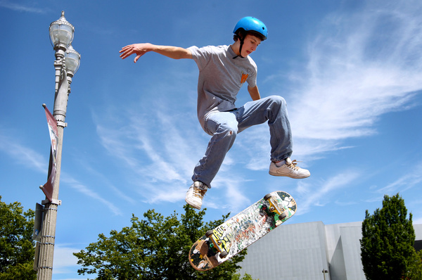

|  | |
| Скейтер віполняет трюк Кикфли́п |
|---|
Скейтбо́рдинг (англ. skateboarding) — экстремальный вид спорта, заключающийся в катании и в исполнении различных трюков на скейтборде
Скейтбординг также включает развлекательную деятельность, вид искусства, работу в индустрии развлечений и способ передвижения. Человека, занимающегося скейтбордингом, называют скейтборди́стом, или ске́йтером. Отчёт за 2009 год показал, что годовой доход рынка скейтбординга оценивается в 4,8 миллиарда долларов США, а в мире насчитывается 11,08 миллиона активных скейтбордистов. В 2016 году было объявлено, что скейтбординг будет впервые представлен на Олимпийских играх в Токио 2020 года. 21 июня отмечается Международный день скейтбординга. С 1970-х годов скейтбордистов и других представителей экстремальных видов спорта специально создавались скейтпарки. Тем не менее, критики скейтбординга заявляют, что деятельность скейтбордистов приводит к повреждению бордюров, каменных кладок, ступеней, скамеек, площадей и парков.
Скейтбординг з'явився наприкінці 1930-х — початку 1950-х років, в середовищі каліфорнійських серферів, які не могли займатися серфінгом, коли не було хвиль. Першими скейтами були ящики та дошки з прикріпленими колесами. Пізніше ящики були замінені на дошки з спресованих шарів деревини — подібні на ті, які використовуються в наш час.
На початку 1960-х, виробники дощок для серфінгу починають випускати скейтборд. В цей же час, завдяки журналу Skateboarder Magazine, популярність скейтбордингу зросла. 1965 року було проведено кілька чемпіонатів. Але, вже до 1966 року популярність скейтбордингу впала та стала збільшуватися лише на початку 1970-х. Проте вже в середині 60-х і на початку 70-х почали розвиватися скейтбордні фірми, які мають сьогодні велику популярність (Vans, Burton).
На початку 1970-х, Френк Несворті створює поліуретанові колеса. Завдяки таким їх властивостями, як покращене зчеплення з дорогою та легкість, популярність скейтбордингу різко збільшується. компанії починають випуск підвісок спеціально призначених для скейтбордингу. Деки стають ширше, досягаючи 10 дюймів (25,4 см), таким чином даючи скейтеру більше контролю над скейтом.
Виробники починають експериментувати з новими матеріалами для дек, такими як скловолокно і алюміній, але більшість грудня робляться з кленової фанери. Скейтери починають винаходити нові трюки. Також, каліфорнійські скейтери, серед яких Ty Page, Bruce Logan[en], Bobby Piercy, Kevin Reed[en], і команда Z-Boys, починають кататися в басейнах, порожніх через посухи 1976 року. Вони є першими, хто почав кататися в стилі верт.
Результатом верт-руху стала боротьба скейт-парків з високою відповідальністю, що призвело більшість з них до закриття. У відповідь на це, верт-скейтери почали будувати свої власні рампи, а фристайл-скейтери продовжували розвиватися в стилі Флетленд. Таким чином, до початку 1980-х років, популярність скейтбордингу знову знизилася.
Винахід Аланом Гелфанд стрибка без рук (пізніше названого ollie) в 1976[3] та розвиток греб-трюків Джорджом Ортон та Тоні Альвою, дозволило скейтерам виконувати трюки у вертикальних рампах. Але, оскільки більшість скейтерів в той час не мали доступу до рамп і не могли собі дозволити власні рампи, стріт-стиль завоював популярність. Одним з піонерів стилю стріт став Родні Маллен, який винайшов багато сучасних трюків, як-от impossible та kickflip.
Вплив фрістайлу на стріт став помітним з середини 80-х, але скейти все ще залишалися призначеними для стилю верт: широкі деки з вузькою носовою частиною та великими м'якими колесами. Проте, наприкінці 80-х скейтбординг швидко розвивався. Через малу кількість скейт-парків, скейтери почали кататися в торгових центрах. Це призвело до неприязні суспільства до скейтбордингу, судових позовів до скейтерів та заборони катання в громадських місцях.
Останнім часом більшість скейтерів катаються в стилі стріт, тому скейти зазнали змін. Їх довжина становить від 30 (76,2 см) до 32 дюймів (81,28 см), ширина — від 7 до 8,6 дюймів. Але бувають та виняток, як в меншу сторону, так і в більшу. Наприклад, випускаються скейтборди шириною в 6 дюймів, призначені для дітей, або дошки шириною 9 і навіть 9,5 дюймів, так звані круйзерні дошки, але вони виготовляються в традиційному виконанні, тобто у формі «рибки». У більшості на них катаються в пулах та рампах, але є люди, яким зручно кататися на таких в стрите. Колеса роблять з дуже твердого поліуретану, з твердістю приблизно 99А, але їх розмір зменшений, що робить скейтборд легше та полегшує виконання трюків. Скейтборд симетричний, відносно вузький, з округленими краями. Ця форма сформувалася на основі скейтів для фрістайлу та стала стандартом з середини 1990-х. Також бувають скейтборд та інших форм, зазвичай вони колекційні і не призначені для катання.
Щербаткін В.О. ИПЗ19-1(2)